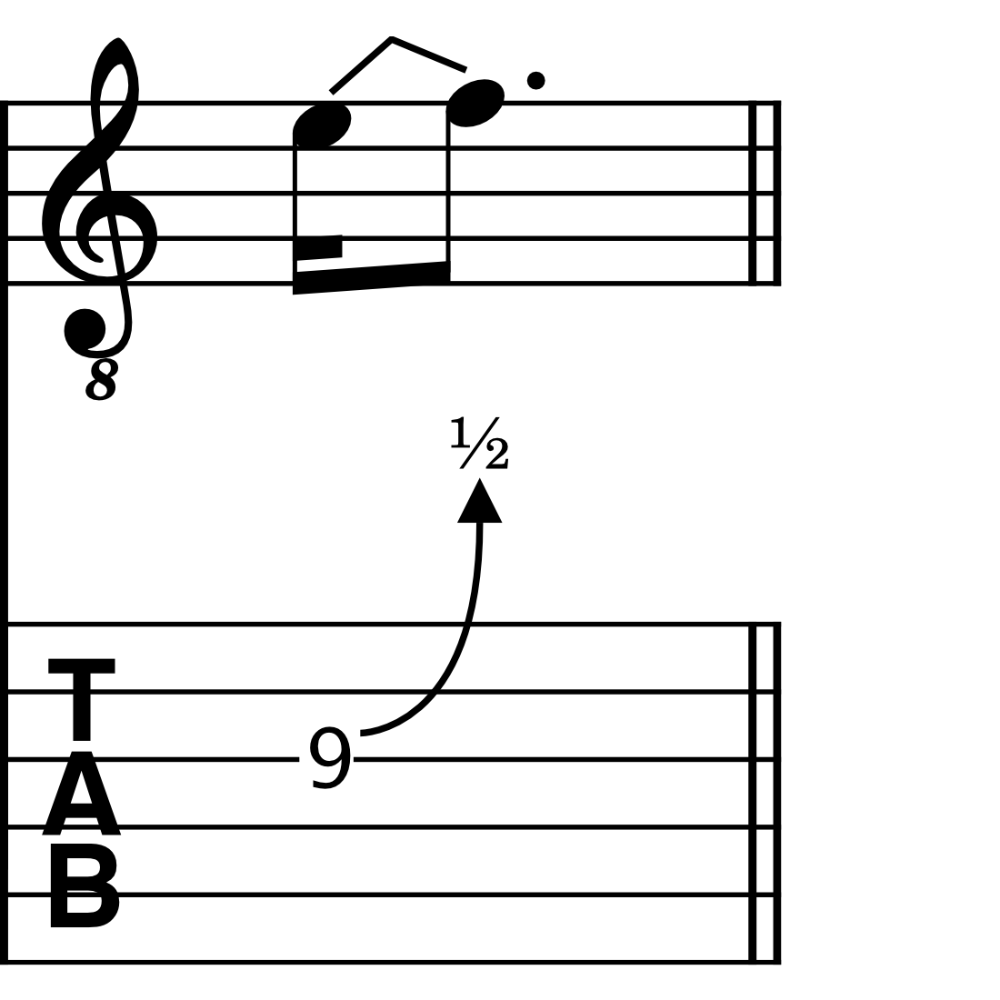
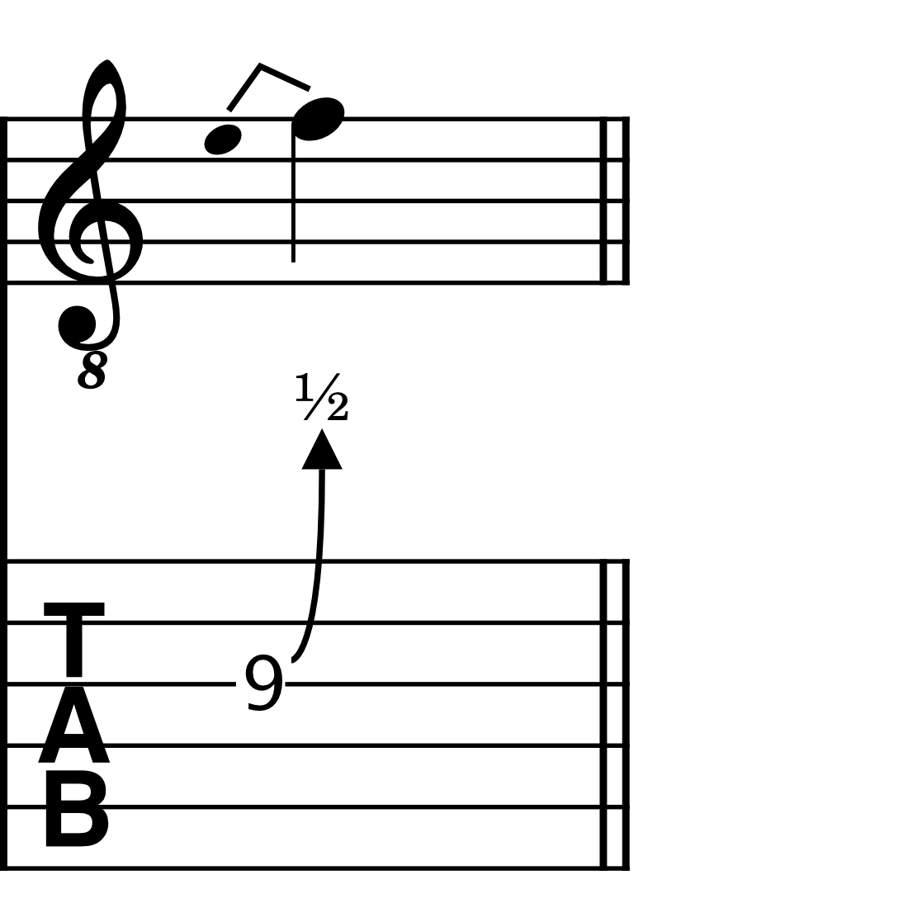
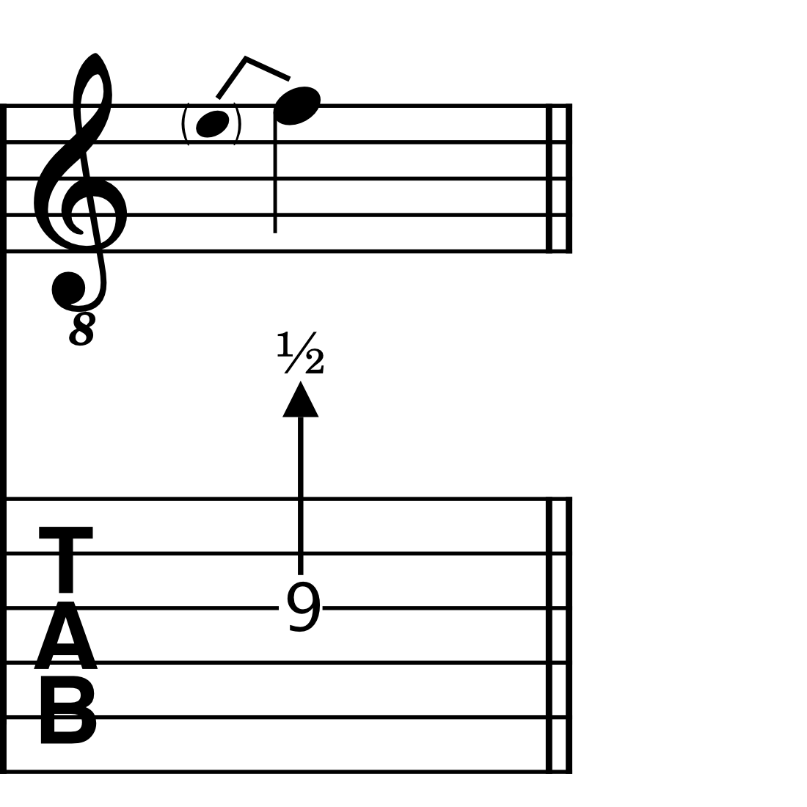
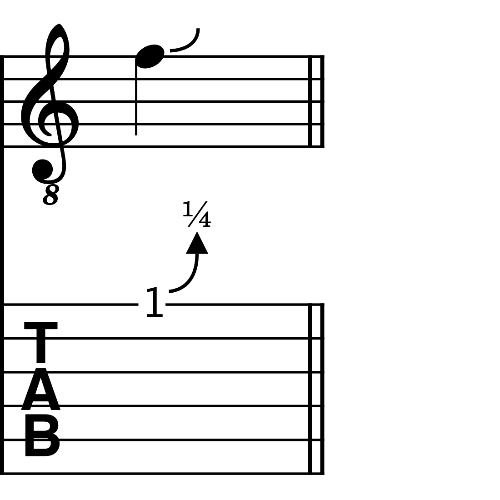
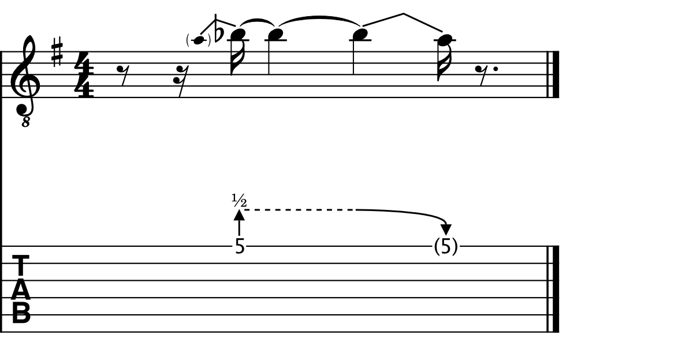
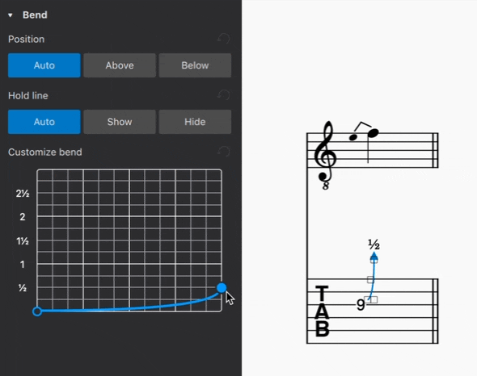
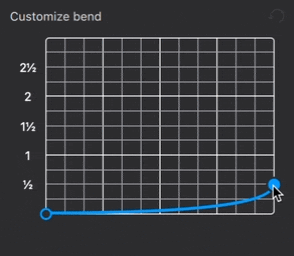
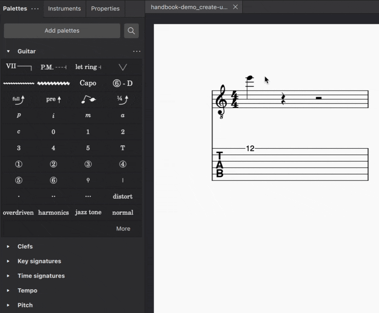

Guitar bends
This page describes features added in MuseScore 4.2. For older versions of MuseScore 4, see Guitar techniques.\ For other types of bends, see brass or woodwind instrument bends.
Adding bends to your score
From MuseScore 4.2 onwards, four types of guitar bends can be added to your score:
- Standard bend
- Pre-bend
- Grace note bend
- Slight bend
These bends can be found in the Guitar palette
General points about bends in MuseScore
In general, bends in MuseScore connect two notes together: a ‘starting note’ and an ‘arrival note’.
Bends are contextual, meaning if the arrival note is higher than the starting note, an upward bend will be created. Conversely, if the arrival note is lower than the starting note, a release will be drawn.
Whenever a bend is added to a tablature stave, both the starting and arrival notes will be entered as a fret positions. The arrival note, however, will be hidden by default. This allows you to create sequences of multiple bends (such as bend-release combinations) using only the tablature stave, without needing to input notes in the standard stave. If you're working mainly in the standard stave, you may find it more convenient to hide these fret positions via the Invisible setting in the Properties panel.
In all cases, the bend amount, being the intervallic distance between the starting and arrival notes, is reflected by the notated pitches on the standard stave, allowing you to see the shape of a melodic line, as it is affected by the presence of bent notes. On the tablature stave, the bend amount is given by a numerical indicator: "1" for a whole tone, "1/2" for a half-tone (semitone), "1/4" for a quarter-tone, etc.
Applying a bend
To apply any type of bend to your score:
- Select one or more notes and click the desired bend symbol in the Guitar palette
- Drag the bend symbol from the Guitar palette on to a note
- Select one or more notes, and enter the required keyboard shortcut (see details below)
Standard bends
Windows Alt+B | macOS Option+B

A standard bend connects two notes together: a ‘starting note’ and an ‘arrival note’. Standard bends are mostly used when it is desired to clearly specify the rhythm of the bend pattern.
When a bend is added to a note, it will automatically be drawn to the next note in the score (the arrival note). If a rest follows the starting note, MuseScore will replace the rest so that the bend has an arrival note to connect to.
Grace note bends
Windows Ctrl+Alt+B | macOS Cmd+Option+B

Grace note bends can be used to indicate bends that don’t have a defined rhythmic duration; they are generally played quite quickly before the beat.
When you apply a grace note bend to a note, it will automatically be entered one diatonic step lower than the note it precedes.
Pre-bends
No default keyboard shortcut: set your own shortcut in Preferences

Pre-bends indicate a string that has been bent prior to being struck. On the standard stave, it is represented as a stemless, parenthesised grace note. On the tablature stave, it is illustrated with a straight, rather than curved arrow.
Slight bends
No default keyboard shortcut: set your own shortcut in Preferences

Slight bends are the only bend type in MuseScore that do not connect to an arrival note.
They are always set to a pre-defined amount of a ¼ of a tone, and always bend upwards from the starting note.
Holds
A hold is indicated by a dashed horizontal line between two bends. It is only ever shown in the tablature stave.
Hold lines are drawn automatically where a bent note is subsequently tied to one or more notes.

In addition, you can manually show or hide hold lines where it makes sense to do so.
- Select a bend in your score
- Open the Properties panel
- Under Hold line, select either Show or Hide to force a hold line to be drawn, or to be hidden, respectively
Modifying bends
Both the intervallic amount and playback speed of bends can be adjusted in MuseScore, either by modifying the pitch of bent notes on the standard stave, or adjusting the bend curve in the Properties panel.
Modifying bends in the standard stave
To change the bend amount of a standard bend, grace note bend, or pre-bend in the standard stave, simply raise or lower the pitch of either the starting or arrival note in your score. The fractional indicator in any linked tablature stave will be adjusted automatically.
Modifying bends in the Properties panel
Both the bend amount and its playback speed can be adjusted via the Properties panel.
To adjust the bend amount:
- Apply a bend to your score, using any of the methods outlined above
- Select the bend
- Open the Properties panel
- In the Customise bend graph, click and drag the end point of the curve up or down

The left-most point of the bend curve corresponds to the starting note in a bend. The right-most point corresponds to the arrival note.
Dragging the right-most (end point) of the curve upwards raises the arrival note in ¼-tone steps. In the same way, dragging the end point downwards lowers the pitch of the arrival note. The fractional indicator in the tablature stave, and the notated pitch in the standard stave, will be updated accordingly.
To adjust the playback speed of a bend:
- Select a bend in your score
- Open the Properties panel
- In the Customise bend graph, click and drag the start and end points of the curve left or right

Dragging a curve point horizontally changes only its playback speed, including the duration for which the starting and arrival notes are held (indicated with a horizontal line). It does not affect rhythmic notation in your score.
Adding bends to chords
MuseScore also makes it possible to apply bends to chords, and to create unison bends.
To apply bends to chords:
- Create a chord of two or more notes
- Select the note(s) to which you want to apply a bend
- Add the desired bend (see steps above)
To create a unison bend:
- Create a chord containing two notes in unison (Add a unison interval to an existing note using
Alt+1on Windows, orOption+1on macOS) - Select the note to which you wish a bend to apply
- Add the desired bend (see steps above)

In the case of unison bends, it can be helpful to apply the bend in the tablature stave, where it can be easier to see which string exactly is being bent.
Customizing bends styles
To customise the appearance of bends across an entire score:
- Go to Format in the menu bar
- Select Style...
- In the dialog that appears, choose Bends from the list of categories on the left
In this dialog, you can modify:
- Line thickness: the thickness of all bend lines in both standard and tablature staves
- Arrow width and Arrow height: the width and height of the arrow heads on bend curves in tablature staves
- Label for full bends: choose from displaying "1" or the word "full" to indicate a whole-tone bend in the tablature stave
- Tablature fret numbers: selecting the checkbox in this section makes all fret positions for grace note bends in tablature staves appear as cue sized numbers (by default, fret position numbers for grace note bends are the same size as fret position numbers for other types of bends).